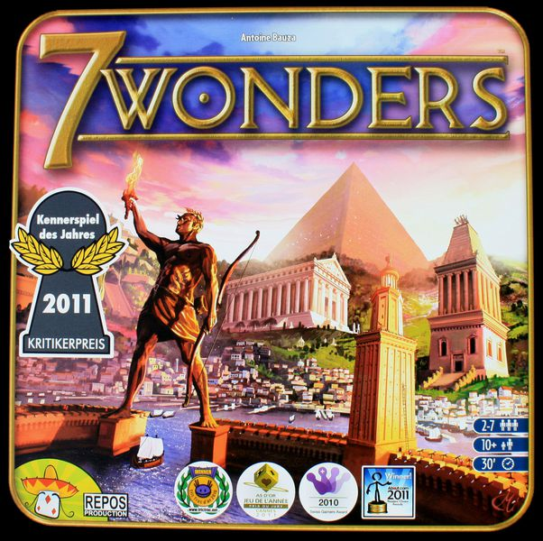

เกมนี้เล่นเรื่องอะไร
7 Wonders ให้เราเป็นผู้นำอารยธรรมในโลกโบราณ ค่อย ๆ พัฒนาเมืองด้วยการ์ด 3 ยุค ทั้งสายทรัพยากร, การค้า, ทหาร, วิทยาศาสตร์, อาคารพลเรือน และกิลด์ปลายเกม หัวใจของเกมคือการ เลือกการ์ดพร้อมกันทุกคน แล้วส่งมือให้ผู้เล่นถัดไป จึงต้องอ่านเกมให้ขาดว่าใบไหนควรเก็บ ใบไหนไม่อยากปล่อยให้เพื่อนบ้านได้
เกมไม่มีการชนะด้วยเงื่อนไขฉับพลันแบบจบก่อน แต่จะนับคะแนนหลังจบ Age III ผู้เล่นที่ทำคะแนนรวมจากทุกระบบได้มากที่สุดจะชนะ ซึ่งหมายความว่าคุณไม่จำเป็นต้องเล่นทุกอย่าง แค่เลือกเส้นทางที่เมืองของคุณทำได้คุ้มที่สุดก็พอ
สิ่งที่ต้องคุม
เงิน ทรัพยากร ห่วงโซ่การ์ดฟรี และสิ่งที่ผู้เล่นซ้ายขวากำลังสะสม
แกนของเกม
เลือกการ์ด 1 ใบต่อรอบ วางพร้อมกัน แล้วส่งมือไปเรื่อย ๆ จนหมด 3 ยุค
แนวคิดสำคัญ
ไม่ได้มีแค่สร้างของตัวเอง แต่ยังต้องตัดของดีไม่ให้คู่ข้างโตง่ายเกินไป

เริ่มเกมอย่างย่อ
1. แจก Wonder และเงินเริ่มต้น
ผู้เล่นแต่ละคนรับกระดาน Wonder 1 แผ่น พร้อมเหรียญเริ่มต้น 3 เหรียญ แล้วเลือกว่าจะเล่นด้าน A หรือ B ตามกติกาที่โต๊ะใช้
2. เตรียมการ์ดตามจำนวนคน
แยกการ์ดเป็น Age I, II, III แล้วใช้เฉพาะใบที่มีสัญลักษณ์รองรับจำนวนผู้เล่นของโต๊ะนี้ จากนั้นแจกคนละ 7 ใบในแต่ละยุค
3. Age III ต้องสุ่มกิลด์เพิ่ม
การ์ดสีม่วงใช้ไม่ครบทั้งกอง ให้สุ่มใส่จำนวนตามกติกาแล้วค่อยผสมกับกองยุค 3 เพื่อให้ปลายเกมไม่เหมือนกันทุกตา
สิ่งที่ควรรู้ก่อนเปิด Age I
- ผู้เล่นทุกคนเล่นพร้อมกัน: ไม่มีการรอคิวทีละคนแบบยูโรส่วนใหญ่
- 1 ยุคมี 6 รอบจริง: เพราะการ์ดใบที่ 7 มักถูกทิ้งเมื่อจบยุคนั้น
- ทิศทางส่งมือสลับกัน: Age I และ III ส่งทิศหนึ่ง ส่วน Age II ส่งอีกทิศหนึ่ง
- เพื่อนบ้านสำคัญมาก: เพราะคุณซื้อทรัพยากรได้แค่จากซ้ายและขวา และทหารก็เทียบกันเฉพาะสองคนนี้
สีการ์ดแต่ละแบบทำหน้าที่อะไร
น้ำตาล
ทรัพยากรพื้นฐาน เช่น ไม้ หิน แร่ อิฐ เป็นฐานของเมืองและสำคัญมากในต้นเกม
เทา
ทรัพยากรแปรรูป เช่น กระดาษ ผ้า แก้ว มักใช้กับการ์ดระดับสูงและการสร้าง Wonder บางขั้น
ฟ้า
คะแนนตรง ๆ ไม่ต้องเงื่อนไขเยอะ เล่นง่ายและมั่นคง เหมาะเวลาต้องการแต้มชัวร์
เหลือง
สายค้าและเศรษฐกิจ ช่วยหาเงิน ลดค่าซื้อทรัพยากร หรือให้ผลพิเศษตามโต๊ะ
แดง
เพิ่มโล่ทหาร เมื่อจบแต่ละยุคจะเทียบกับเพื่อนบ้านซ้ายขวาแล้วรับแต้มชนะหรือแต้มลบ
เขียว
วิทยาศาสตร์ ทำแต้มแรงมากถ้าปั้นต่อเนื่อง เพราะได้ทั้งแต้มจากชุดเหมือนและชุดครบ 3 สัญลักษณ์
ม่วง
กิลด์ของ Age III ให้คะแนนตามสิ่งปลูกสร้างหรือสถานะของผู้เล่นข้างเคียง เป็นใบพลิกคะแนนปลายเกมได้มาก
Wonder Board
ไม่ใช่สีการ์ด แต่เป็นอีกเส้นทางแต้มและความสามารถเฉพาะตัว ใช้การ์ดในมือเป็นวัสดุเพื่อสร้างแต่ละขั้น
ในแต่ละรอบทำอะไรได้บ้าง
1. สร้างการ์ด
จ่ายทรัพยากรหรือใช้ chain building ถ้ามี เพื่อวางการ์ดใบที่เลือกตรงหน้าเมืองของคุณ
2. สร้าง Wonder
คว่ำการ์ดในมือ 1 ใบลงใต้กระดาน Wonder แล้วจ่ายทรัพยากรตามขั้นนั้นเพื่อปลดเอฟเฟกต์หรือแต้ม
3. ทิ้งเพื่อรับเงิน
ถ้าเล่นอะไรไม่ได้หรือใบไม่คุ้ม ให้ทิ้งการ์ดเพื่อรับ 3 เหรียญ เป็นทางแก้มือที่ใช้บ่อยกว่าที่คิด
กฎที่ทำให้ตัดสินใจง่ายขึ้น
- Chain Building: ถ้าการ์ดใบใหม่มีสัญลักษณ์เชื่อมจากการ์ดที่คุณมีอยู่แล้ว อาจสร้างฟรีโดยไม่ต้องจ่ายทรัพยากร
- Trading: คุณซื้อทรัพยากรจากผู้เล่นซ้ายหรือขวาได้ในราคาปกติ 2 เหรียญต่อชิ้น เว้นแต่มีการ์ดเหลืองช่วยลดราคา
- ผลิตทรัพยากรไม่ถูกใช้หมด: ทรัพยากรบนการ์ดของคุณเป็นเหมือนสิทธิ์ใช้ในเทิร์นนั้น ไม่ได้ส่งการ์ดออกจากเมือง
- เล่นพร้อมกันแล้วค่อยเปิด: ทุกคนเลือกหน้าไพ่พร้อมกัน ทำให้เกมเดินเร็วและมีจังหวะอ่านโต๊ะตลอดเวลา
เมื่อจบแต่ละยุคจะเกิดอะไร
- ทหารตัดสินทันที: เทียบโล่กับผู้เล่นซ้ายและขวา ชนะได้แต้ม แพ้ได้แต้มลบ
- เริ่มยุคใหม่ด้วยมือใหม่: แจกการ์ดยุคถัดไปคนละ 7 ใบ แล้วสลับทิศทางการส่งมือตามกติกา
- ปลายเกมจะคมขึ้น: Age I สร้างฐาน, Age II อัปเกรดเครื่องยนต์, Age III ปั่นแต้มจากกิลด์และสายที่สะสมมา
คิดคะแนนจากอะไรบ้าง
การ์ดฟ้า
แต้มตรง ๆ ที่เห็นบนการ์ด นับง่ายและเสถียรที่สุด
Wonder
แต่ละขั้นของ Wonder มักให้แต้ม หรือเอฟเฟกต์ที่แปลงเป็นแต้มทางอ้อม
ทหาร
แต้มชนะจากแต่ละยุคและแต้มลบจากการแพ้เพื่อนบ้าน
เงิน
ทุก 3 เหรียญตอนจบเกม = 1 คะแนน จึงเป็นรายได้เสริม ไม่ใช่ทางชนะหลัก
วิทยาศาสตร์
แต้มจะพุ่งมากถ้าสะสมต่อเนื่อง เป็นสายที่แรงสุดสายหนึ่งถ้าไม่มีคนตัด
กิลด์สีม่วง
คิดแต้มปลายเกมตามเงื่อนไขเฉพาะ มักคุ้มมากเมื่อโต๊ะเล่นไปคนละทาง
แนวคิดตอนเล่นจริง
7 Wonders ไม่ได้บังคับให้เล่นทุกสี การชนะมักมาจากการมี เศรษฐกิจพอใช้ + แต้มหลัก 1-2 สายที่ชัด เช่น ฟ้ากับกิลด์, ทหารกับ Wonder, หรือวิทยาศาสตร์ล้วน ๆ ถ้าคุณพยายามเก็บทุกอย่างพร้อมกัน เมืองจะโตไม่ทันคนที่เลือกทางชัดกว่า